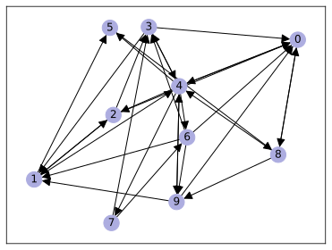
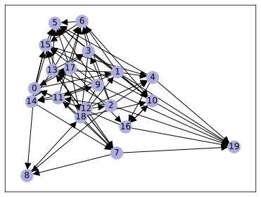
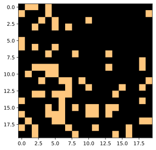
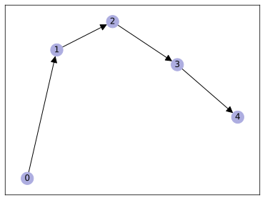
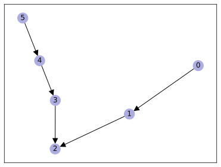
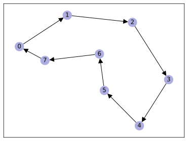
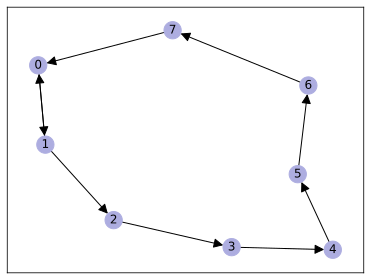
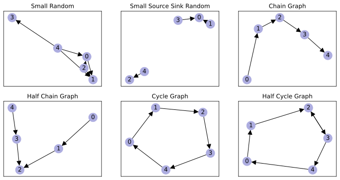

dataset = SmallRandom(num_nodes=10, prob_edge=0.3)
data = dataset[0] # there is only graph in this datasetToy Graph Datasets for FRED
FRED is, at heart, an embedder of directed graphs. But what types of graphs? This notebook, and those nested under 01a01, contain a battery of toy directed graphs, including:
- (Directed) Stochastic Block Models
- Trees
- Small Random graphs
This notebook houses a sampling of these graphs, with details on how to call them and visualize them.
Graph Visualization Tools
visualize_graph
visualize_graph (data, is_networkx=False, to_undirected=False, ax=None)
visualize_heatmap
visualize_heatmap (edge_index, order_ind=None, cmap='copper', ax=None)
display_gallery
display_gallery (vizset, ncol=4)
display_graph_gallery
display_graph_gallery (dataset, ncol=4)
display_heatmap_gallery
display_heatmap_gallery (dataset, ncol=4)
Small Random Toy Directed Graphs
First, we will create several small and random toy directed graphs and visualize them directly. We will test any embedding and visualization methods on these datasets to check if the embeddings/visualization matches our intuition about the flow on the small directed graphs.
SmallRandom
SmallRandom (num_nodes=5, prob_edge=0.2, transform=None, pre_transform=None)
Dataset base class for creating graph datasets which easily fit into CPU memory. Inherits from :class:torch_geometric.data.Dataset. See here <https://pytorch-geometric.readthedocs.io/en/latest/notes/ create_dataset.html#creating-in-memory-datasets>__ for the accompanying tutorial.
Args: root (string, optional): Root directory where the dataset should be saved. (default: :obj:None) transform (callable, optional): A function/transform that takes in an :obj:torch_geometric.data.Data object and returns a transformed version. The data object will be transformed before every access. (default: :obj:None) pre_transform (callable, optional): A function/transform that takes in an :obj:torch_geometric.data.Data object and returns a transformed version. The data object will be transformed before being saved to disk. (default: :obj:None) pre_filter (callable, optional): A function that takes in an :obj:torch_geometric.data.Data object and returns a boolean value, indicating whether the data object should be included in the final dataset. (default: :obj:None)
Let’s try creating one such graph
visualize_graph(data)
Add source and sink communities
In a directed graph, a node is a source if it has in-degree of 0, and a node is a sink if it has out-degree of 0. These notions can be generalized into source communities and sink communities (by communities we simply mean a group of nodes in the directed graph). If we think of information on the directed graph as some mass diffusing through random walk, then mass will stay in the sink communities once enter and mass will stay out of the source communities once exit. Then, the existence of source and/or sink communities could imbalancedly affect the measurement of diffusion curvature.
In order to assess and possibly correct this effect, we first want to create directed graphs with source and/or sink communities. We will do so by create pretransformation to existing directed graph data so to make all edges connected to some ground-truth communities pointing outwards (for source communities) or inwards (for sink communities).
We will be flexible and add a parameter adv_prob to indicate the probability of edges pointing in the wrong direction. This probability should be zero or close to zero.
There are two possible way to correct the edges that point in the wrong direction: either by reversing the direction or by removing the edge completely. The probability of employing these methods is specified by the probability remove_prob. This parameter could help mitigate the effect of excessive number of edges pointing out of (into resp.) source (sink resp.) communities.
SourceSink
SourceSink (prob_source=0.1, prob_sink=0.1, adv_prob=0, remove_prob=0)
Transform a (directed or undirected) graph into a directed graph with a proportion of the nodes with mostly out-edges and a porportion of the nodes with mostly in-edges
| Type | Default | Details | |
|---|---|---|---|
| prob_source | float | 0.1 | must be between 0 and 1 Proportion of nodes/communities to turn into source nodes/communities (with mostly out-edges) |
| prob_sink | float | 0.1 | must be between 0 and 1 prob_source and prob_sink must add up to no more than 1 Proportion of nodes/communities to turn into sink nodes/communities (with mostly in-edges) |
| adv_prob | int | 0 | must be between 0 and 1 Probability of in-edges for source nodes and/or out-edges for sink nodes |
| remove_prob | int | 0 | must be between 0 and 1 Probability of removing an in-edge for source nodes and/or out-edges for sink nodes 1 - remove_prob is the probability of reversing the direction of in-edge for source nodes and/or out-edges for sink nodes |
It is also possible to create source and sink nodes using the same SourceSink transformation to generate small directed graph with specific characteristic. We will try transforming the graph above into a big cluster of source and a smaller cluster of sinks
pre_transform = SourceSink(prob_source=0.6, prob_sink=0.4, adv_prob=0.1, remove_prob=0)
dataset = SmallRandom(num_nodes=20, prob_edge=0.2, pre_transform=pre_transform)
data = dataset[0]/var/folders/y5/4qfj8yjj1hb97n6q01_dg0km0000gn/T/ipykernel_88073/2928479379.py:88: UserWarning: Data has no ground-truth labels
warnings.warn("Data has no ground-truth labels")visualize_graph(data)
order_ind = torch.argsort(data.y[:,1])
visualize_heatmap(data.edge_index, order_ind)
Specific Small Graphs
We create a few extremely simple graphs that can be immediately understood with simple nodes-and-edges visualization, including ChainGraph and CycleGraph.
ChainGraph
ChainGraph (num_nodes=5, transform=None)
Dataset base class for creating graph datasets which easily fit into CPU memory. Inherits from :class:torch_geometric.data.Dataset. See here <https://pytorch-geometric.readthedocs.io/en/latest/notes/ create_dataset.html#creating-in-memory-datasets>__ for the accompanying tutorial.
Args: root (string, optional): Root directory where the dataset should be saved. (default: :obj:None) transform (callable, optional): A function/transform that takes in an :obj:torch_geometric.data.Data object and returns a transformed version. The data object will be transformed before every access. (default: :obj:None) pre_transform (callable, optional): A function/transform that takes in an :obj:torch_geometric.data.Data object and returns a transformed version. The data object will be transformed before being saved to disk. (default: :obj:None) pre_filter (callable, optional): A function that takes in an :obj:torch_geometric.data.Data object and returns a boolean value, indicating whether the data object should be included in the final dataset. (default: :obj:None)
dataset = ChainGraph(num_nodes=5)
data = dataset[0]
visualize_graph(data)
HalfChainGraph
HalfChainGraph (num_nodes=3, center=1, transform=None)
Dataset base class for creating graph datasets which easily fit into CPU memory. Inherits from :class:torch_geometric.data.Dataset. See here <https://pytorch-geometric.readthedocs.io/en/latest/notes/ create_dataset.html#creating-in-memory-datasets>__ for the accompanying tutorial.
Args: root (string, optional): Root directory where the dataset should be saved. (default: :obj:None) transform (callable, optional): A function/transform that takes in an :obj:torch_geometric.data.Data object and returns a transformed version. The data object will be transformed before every access. (default: :obj:None) pre_transform (callable, optional): A function/transform that takes in an :obj:torch_geometric.data.Data object and returns a transformed version. The data object will be transformed before being saved to disk. (default: :obj:None) pre_filter (callable, optional): A function that takes in an :obj:torch_geometric.data.Data object and returns a boolean value, indicating whether the data object should be included in the final dataset. (default: :obj:None)
dataset = HalfChainGraph(num_nodes=6, center=2)
data = dataset[0]
visualize_graph(data)
CycleGraph
CycleGraph (num_nodes=8, transform=None)
Dataset base class for creating graph datasets which easily fit into CPU memory. Inherits from :class:torch_geometric.data.Dataset. See here <https://pytorch-geometric.readthedocs.io/en/latest/notes/ create_dataset.html#creating-in-memory-datasets>__ for the accompanying tutorial.
Args: root (string, optional): Root directory where the dataset should be saved. (default: :obj:None) transform (callable, optional): A function/transform that takes in an :obj:torch_geometric.data.Data object and returns a transformed version. The data object will be transformed before every access. (default: :obj:None) pre_transform (callable, optional): A function/transform that takes in an :obj:torch_geometric.data.Data object and returns a transformed version. The data object will be transformed before being saved to disk. (default: :obj:None) pre_filter (callable, optional): A function that takes in an :obj:torch_geometric.data.Data object and returns a boolean value, indicating whether the data object should be included in the final dataset. (default: :obj:None)
dataset = CycleGraph(num_nodes=8)
data = dataset[0]
visualize_graph(data)
HalfCycleGraph
HalfCycleGraph (num_nodes=3, center=0, transform=None)
Dataset base class for creating graph datasets which easily fit into CPU memory. Inherits from :class:torch_geometric.data.Dataset. See here <https://pytorch-geometric.readthedocs.io/en/latest/notes/ create_dataset.html#creating-in-memory-datasets>__ for the accompanying tutorial.
Args: root (string, optional): Root directory where the dataset should be saved. (default: :obj:None) transform (callable, optional): A function/transform that takes in an :obj:torch_geometric.data.Data object and returns a transformed version. The data object will be transformed before every access. (default: :obj:None) pre_transform (callable, optional): A function/transform that takes in an :obj:torch_geometric.data.Data object and returns a transformed version. The data object will be transformed before being saved to disk. (default: :obj:None) pre_filter (callable, optional): A function that takes in an :obj:torch_geometric.data.Data object and returns a boolean value, indicating whether the data object should be included in the final dataset. (default: :obj:None)
dataset = HalfCycleGraph(num_nodes=8, center=0)
data = dataset[0]
visualize_graph(data)
Showcase
/var/folders/y5/4qfj8yjj1hb97n6q01_dg0km0000gn/T/ipykernel_88073/2928479379.py:88: UserWarning: Data has no ground-truth labels
warnings.warn("Data has no ground-truth labels")